2026-10-16-gpt6-vs-claude55
OpenAI GPT-6.1 Sol and GPT-6 Luna against Claude Sonnet 5.5 and Haiku 5.5, each reading the page images and extracting the fields in one call (RAI gateway; Claude at temperature 0).
One experiment. New here? The main page explains what the benchmark does, what the pipelines and metrics mean, and the document types.
Key facts (computed, not LLM-written)
| question | clean pages | degraded pages |
|---|---|---|
| most accurate pipeline | page images → Claude Haiku 5.5 (image->haiku-5.5): 100.0% | page images → Claude Sonnet 5.5 (image->sonnet-5.5): 99.1% |
| cheapest pipeline (among priced, see note) | – | – |
| fastest pipeline | page images → Claude Haiku 5.5 (image->haiku-5.5): 1.8 s/doc | page images → Claude Sonnet 5.5 (image->sonnet-5.5): 1.6 s/doc |
Cost note: no cost could be computed for image->gpt-6-luna, image->gpt-6.1-sol, image->haiku-5.5, image->sonnet-5.5 (no price configured, or no successful request reported its token usage), so they are left out of the cheapest-pipeline comparison. Set price_per_mtok for those backends to include them.
Every pipeline (field accuracy, time per document, cost per 1,000 documents):
| pipeline | clean accuracy | degraded accuracy | s/doc (clean) | $/1k docs (clean) |
|---|---|---|---|---|
page images → GPT-6 Luna (image->gpt-6-luna) | 91.8% | 87.5% | 3.3 | – |
page images → GPT-6.1 Sol (image->gpt-6.1-sol) | 99.7% | 95.4% | 3.7 | – |
page images → Claude Haiku 5.5 (image->haiku-5.5) | 100.0% | 98.8% | 1.8 | – |
page images → Claude Sonnet 5.5 (image->sonnet-5.5) | 100.0% | 99.1% | 1.8 | – |
Fields missed most often (count over clean + degraded documents):
- page images → GPT-6 Luna (
image->gpt-6-luna):invoice.kid(10),holiday_survey.signed_date(7),receipt.merchant(4),receipt.card_last4(4) - page images → GPT-6.1 Sol (
image->gpt-6.1-sol):invoice.account_number(4),holiday_survey.signed_date(2),letter.recipient(1),newsletter.new_fee(1) - page images → Claude Haiku 5.5 (
image->haiku-5.5):newsletter.new_fee(2),holiday_survey.budget_per_person(1),rental_contract.monthly_rent(1) - page images → Claude Sonnet 5.5 (
image->sonnet-5.5):holiday_survey.activities(1),newsletter.new_fee(1),rental_contract.monthly_rent(1)
Recommendation
LLM comment by opus-5.5 (anthropic/claude-opus-5-5) on the computed key facts. Check the numbers against the tables below.
Bottom line
Choose image->sonnet-5.5. It is the most accurate pipeline on degraded pages (99.1%), ties for most accurate on clean pages (100.0%), and is the fastest on degraded pages (1.6 s/doc). Real-world inputs look like phone photos, so robustness on degraded pages is the deciding factor.
What the facts say
- All 4 pipelines read page images directly, so the differences come only from the extractor model. No OCR stage was involved.
- Clean pages do not separate the Claude models:
image->haiku-5.5andimage->sonnet-5.5both reach 100.0%. Degraded pages are where they diverge, andimage->gpt-6-lunaandimage->gpt-6.1-sollose more accuracy there than the Claude models. - The most-missed fields differ by model:
image->gpt-6-lunamisses mostly identifiers and dates, led byinvoice.kid(10) andholiday_survey.signed_date(7). This points to a systematic weakness with reference numbers rather than random noise.- The Claude models' few misses are scattered amounts, such as
newsletter.new_feeandrental_contract.monthly_rent. These look like isolated errors. - The key facts report no runaway pages and no per-page degradation breakdown beyond the accuracy columns.
- No self-hosted models appear in the key facts, so there is no evidence on where self-hosting helps.
Choice by goal
| goal | choice | why |
|---|---|---|
| highest accuracy | image->sonnet-5.5 | Most accurate on degraded pages and tied for most accurate on clean pages |
| lowest latency | image->haiku-5.5 (clean) / image->sonnet-5.5 (degraded) | Named fastest for clean pages (1.8 s/doc) and degraded pages (1.6 s/doc) respectively |
| lowest cost | unknown | No pipeline has a configured price, so there is no cheapest pipeline. Set price_per_mtok before ranking. |
| checking / second opinion | image->haiku-5.5 alongside image->sonnet-5.5 | Close in accuracy, and their missed fields only partly overlap |
| self-host | no evidence yet | No self-hosted backend was benchmarked |
Caveats
- The benchmark uses 48 synthetic Norwegian documents across 8 types. Real layouts, handwriting and other languages may behave differently.
- "Degraded" means a simulated phone photo. Real capture problems, such as glare, folds or multi-page scans, may be harsher.
- At the top, the miss counts are very small (1–2 per field). Differences between
image->haiku-5.5andimage->sonnet-5.5may not hold on a larger set. - Cost is entirely unmeasured. A cost-driven decision could change once prices are configured.
Setup
Models
| role | name in tables | model | model id | served by | temperature | price |
|---|---|---|---|---|---|---|
| extraction agent (default) | sonnet-4.5 | Claude Sonnet 4.5 (2025-09-29) | anthropic.claude-sonnet-4-5-20250929-v1:0 | OpenAI-compatible gateway | 0 | $3.0 in / $15.0 out per 1M tokens |
| extractor | gpt-6.1-sol | GPT-6.1 Sol | openai/gpt-6.1-sol | OpenAI-compatible gateway | default | – |
| extractor | gpt-6-luna | GPT-6 Luna | openai/gpt-6-luna | OpenAI-compatible gateway | default | – |
| extractor | sonnet-5.5 | Claude Sonnet 5.5 | anthropic/claude-sonnet-5-5 | OpenAI-compatible gateway | 0 | – |
| extractor | haiku-5.5 | Claude Haiku 5.5 | anthropic/claude-haiku-5-5 | OpenAI-compatible gateway | 0 | – |
| recommendation writer | opus-5.5 | Claude Opus 5.5 | anthropic/claude-opus-5-5 | OpenAI-compatible gateway | 1 | – |
The extraction agent
The agent (default extractor) is Claude Sonnet 4.5 (2025-09-29) (anthropic.claude-sonnet-4-5-20250929-v1:0), temperature 0. It gets the document type's field list (name, type, one-line description), plus either the page images (image->agent) or the text transcript of every page, in order (<transcriber>->agent), and returns one JSON object with the field values copied verbatim; max 2,048 output tokens. It never sees the ground truth. Pipelines that name another extractor (gpt-6.1-sol, gpt-6-luna, sonnet-5.5, haiku-5.5) use that model with the same input.
GPU
No self-hosted model in this run, so no GPU was used.
Run
| plan | gpt6-vs-claude55: OpenAI GPT-6.1 Sol and GPT-6 Luna against Claude Sonnet 5.5 and Haiku 5.5, each reading the page images and extracting the fields in one call (RAI gateway; Claude at temperature 0). (0 transcription runs) |
| documents | 48 documents, 54 pages, 108 page images (clean + degraded), seed 7 |
| runner | local (2048 CPU units / 4096 MB) |
| code | git e264b1d+dirty |
| started | 2026-10-16T22:54:29 |
Results
Speed and cost (stage 1)
No speed data.
Transcription quality (stage 1)
No transcription scores.
Field extraction (stage 2)
| Input → extractor | Pipeline id | Variant | Docs | Coverage | Field accuracy | Correct | Total | Extractor latency (s) | End-to-end (s) | $/1k docs |
|---|---|---|---|---|---|---|---|---|---|---|
| page images → GPT-6 Luna | image->gpt-6-luna | clean | 48 | 100.0% | 91.8% | 302 | 329 | 3.28 | 3.28 | – |
| page images → GPT-6 Luna | image->gpt-6-luna | degraded | 48 | 100.0% | 87.5% | 288 | 329 | 4.67 | 4.67 | – |
| page images → GPT-6.1 Sol | image->gpt-6.1-sol | clean | 48 | 100.0% | 99.7% | 328 | 329 | 3.70 | 3.70 | – |
| page images → GPT-6.1 Sol | image->gpt-6.1-sol | degraded | 48 | 100.0% | 95.4% | 314 | 329 | 6.32 | 6.32 | – |
| page images → Claude Haiku 5.5 | image->haiku-5.5 | clean | 48 | 100.0% | 100.0% | 329 | 329 | 1.78 | 1.78 | – |
| page images → Claude Haiku 5.5 | image->haiku-5.5 | degraded | 48 | 100.0% | 98.8% | 325 | 329 | 1.93 | 1.93 | – |
| page images → Claude Sonnet 5.5 | image->sonnet-5.5 | clean | 48 | 100.0% | 100.0% | 329 | 329 | 1.81 | 1.81 | – |
| page images → Claude Sonnet 5.5 | image->sonnet-5.5 | degraded | 48 | 100.0% | 99.1% | 326 | 329 | 1.63 | 1.63 | – |
Highlighted: best value per column within each variant. Click a header to sort.
Documents (48)
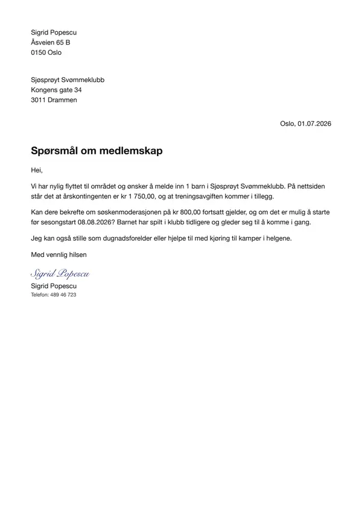

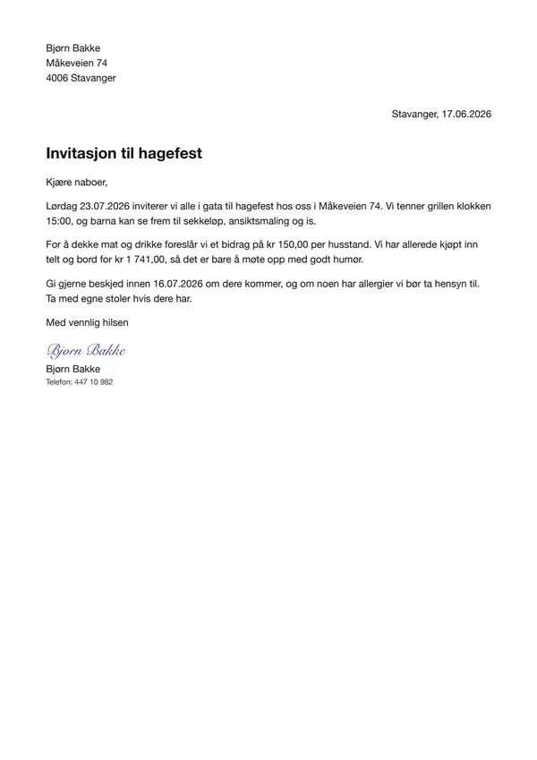
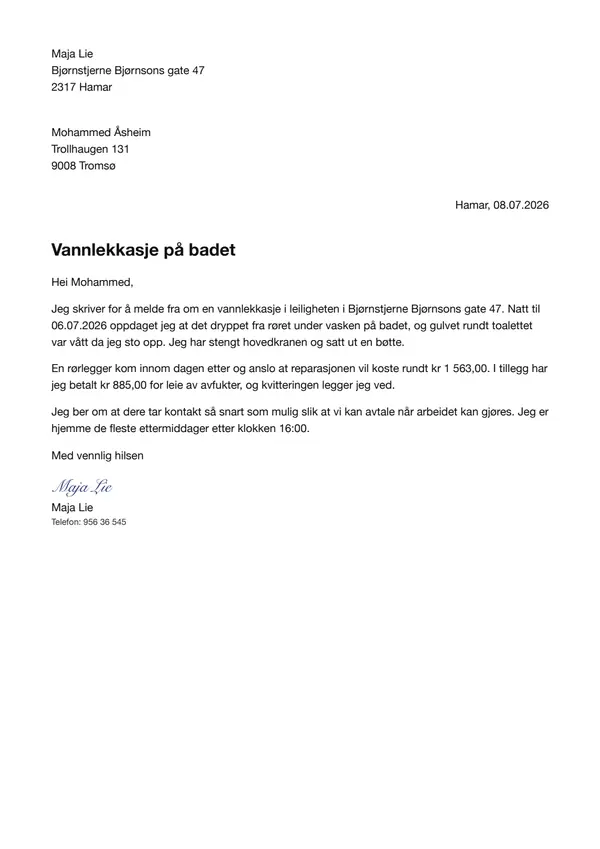


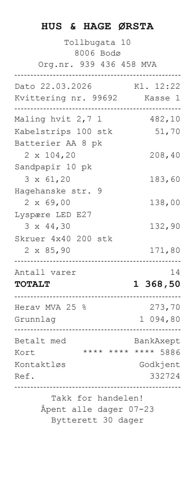


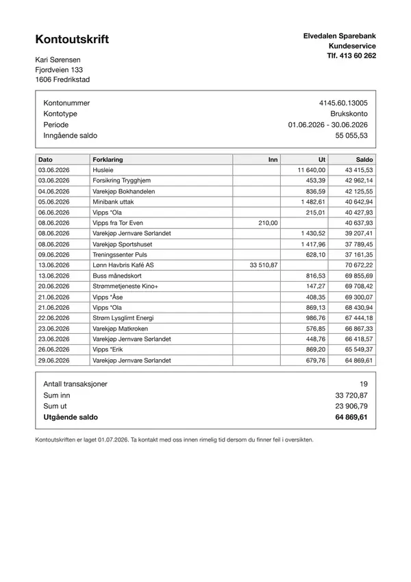
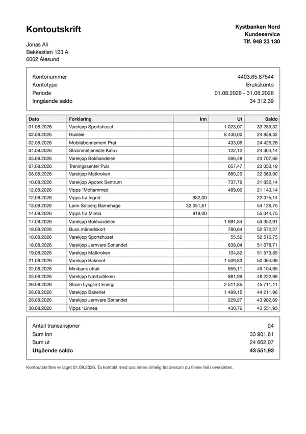


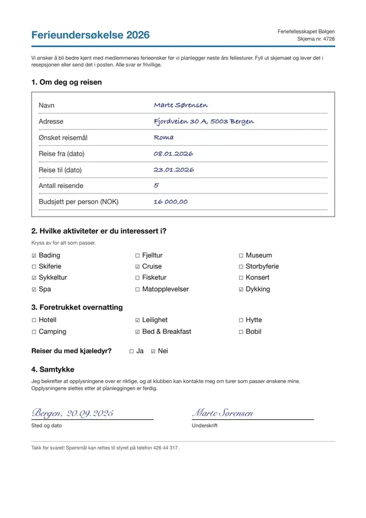

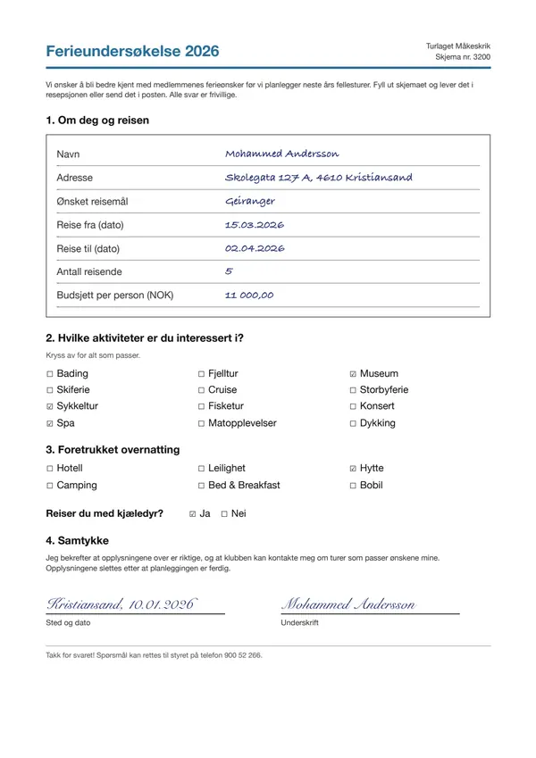


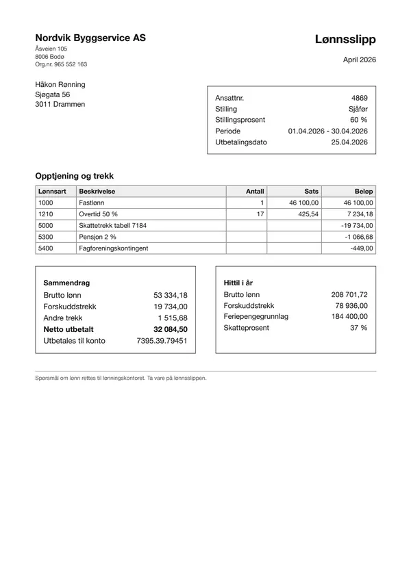


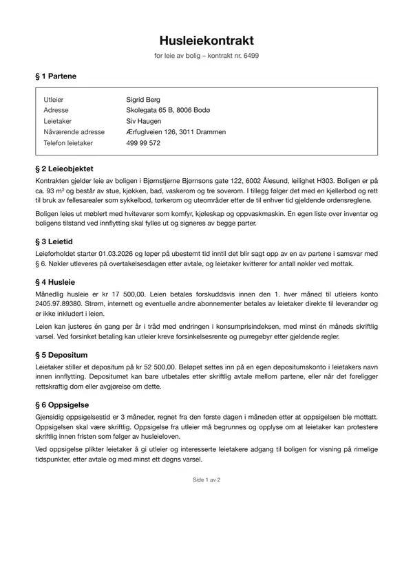


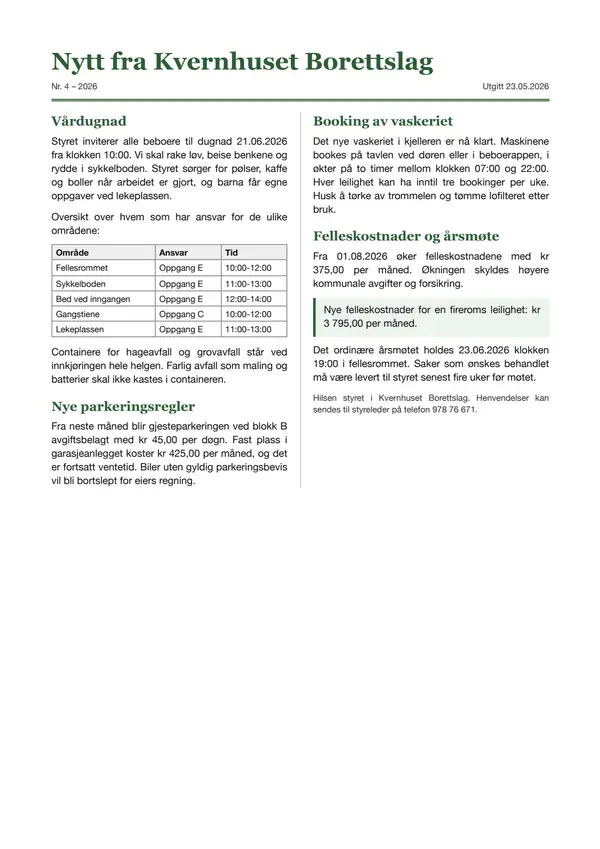

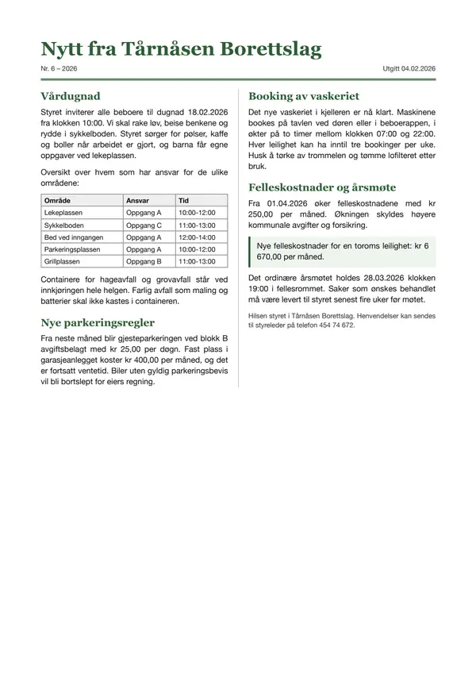

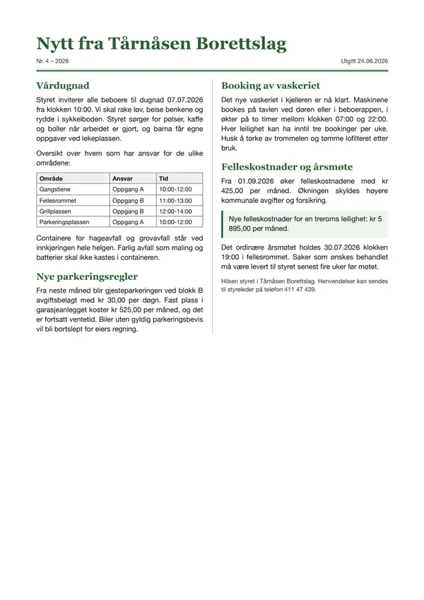